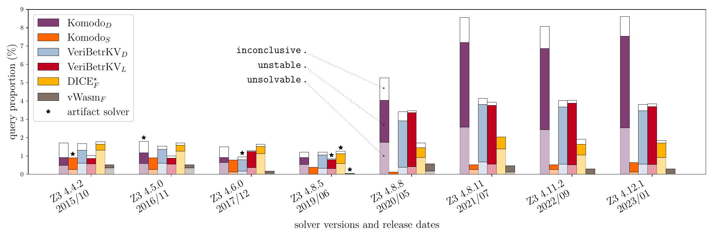
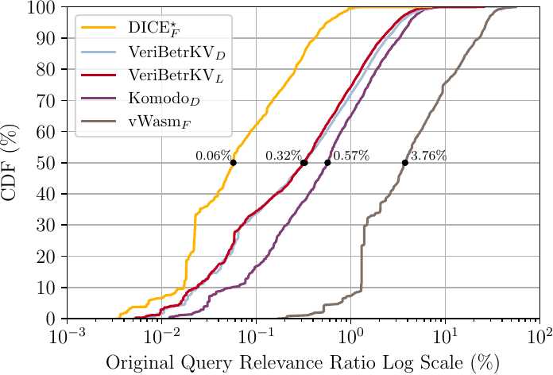

Mariposa: the Butterfly Effect in SMT-based Program Verification
Satisfiability Modulo Theories (SMT) solvers are powerful tools
that answer logical and mathematical questions.
As an example, let’s say I want to know whether there exists integers
\(a, b, c\) such that \(3a^{2} -2ab -b^2c = 7\).
To ask an SMT solver, I need to write an SMT query, which is in a standardized format for expressing logical problems. In the SMT query below, the declare-fun command creates a variable (i.e., a
function with no argument), the assert command states the equation
as a constraint. More generally, an SMT query may contain
multiple assertions, and the check-sat command checks if
the query context, i.e., the conjunction of the
assertions, is satisfiable.
(declare-fun a () Int)
(declare-fun b () Int)
(declare-fun c () Int)
(assert
(=
(+ (* 3 a a) (* -2 a b) (* -1 b (* c b)))
7
)
)
(check-sat)
The possible answers from the SMT solver can be “Yes”
(satisfiable), “No” (unsatisfiable) or “I don’t know”
(unknown). Suppose the solver responds with “Yes”
(satisfiable) in this case. This is good, because the
question is not so straightforward to me at least, and the
solver gives a definitive answer. What’s more, the solver
provides fairly high assurance about its responses, which
are justified by precise mathematical reasoning. For
this example, the solver can also provide a solution, a = 1, b = 2, c = -2, which serves as a checkable witness to
the “Yes” answer.
However, the solver is not perfect, because even a seemingly benign change to a query can trip up the SMT solver, causing it to give up. Suppose that I slightly tweak the formula and ask again:
(declare-fun e () Int)
(declare-fun f () Int)
(declare-fun g () Int)
(assert
(=
(+ (* 3 e e) (* -2 e f) (* -1 f (* g f)))
7
)
)
(check-sat)
This time, the following may happen: the solver gives up, saying “I don’t know” to this new query. Understandably, this may seem puzzling. As you might have noticed, the two queries are essentially the same, just with different variable names. Is it even a legitimate move for it to give up? Why would the solver give different responses?
Before you get mad at the solver (this is a made-up example BTW), let me explain why it can unexpectedly fail with a seemingly innocuous query change. As mentioned earlier, the SMT solver sticks to precise mathematical reasoning. Therefore, if a best-effort try doesn’t work out, the solver is allowed to give up, instead of giving bogus answers. Moreover, the solver heuristics may not be robust against superficial modifications to the input, leading to confusing responses on similar inquiries.
What we have observed in this example is the phenomenon of SMT instability, where trivial changes to the input query may incur large performance variations (or even different responses) from the solver. While there are many applications of the SMT solver, in this blog post, I will focus on instability in SMT-based program verification, where we ask the solver to prove programs correct. More concretely, instability manifests as a butterfly effect: even tiny, superficial changes in the program may lead to noticeable change in proof performance and even spurious verification failures.
Instability in SMT-based Program Verification
Please allow me to briefly explain why program verification is useful, how SMT solvers can help with verification, and why instability comes up as a concern. If you are already familiar with the background topic, please feel free to skip this section.
As programmers, we often make informal claims about our software. For example, I might say that a filesystem is crash-safe or an encryption software is secure, etc. However, as many of us can testify, these claims might be unfounded or even straight-up wrong. Sometimes, the cost of software failure can be catastrophic (e.g., consider spacecrafts or medical devices). Fortunately, formal verification offers a path to move beyond informal claims and avoid such disasters.
Formal verification uses proofs to show that the code meets its specification. In comparison to testing, formal verification offers a higher level of assurance, since it reasons about the program’s behavior for all possible inputs, not just the ones in the test cases. In a more-or-less standard algorithm, program properties can be encoded as logical statements, often called the verification conditions (VCs). Essentially, the task of formal verification is to prove that the VCs hold.
In SMT-based program verification, the solver takes as input the VCs and search for proofs. As you might have gathered from the previous example, the SMT solver can reason about pretty complex logical statements. In this way, the solver enables a high degree of automation, allowing the developer to skip manual and tedious proof steps. This methodology has thus made verification of complex software systems a reality.
However, SMT-based automation also introduces the problem of instability. Verified software, similar to regular software, has an iterative development process. As the developers make incremental changes to the code, corresponding queries also change constantly. Even seemingly trivial changes, such as renaming a variable would create a different query. As we have discussed, the solver may not respond consistently to these changes, leading to confusing verification results and frustrated developers.
Detecting Instability with Mariposa
Now that we have a basic understanding of instability, let’s try to quantify it more systematically. I will introduce the methodology used in Mariposa, a tool that we have built to measure and detect instability. In this blog post, I will stick to the key intuitions and elide the details. For a more thorough discussion, I encourage you to check out our paper. At a high level, given an original query \( q \) and an SMT solver \( s \), Mariposa answers the question:
Is the query-solver pair \((q, s)\) stable?
Intuitively, instability means that \( s \) experiences a mix of successes and failures when we apply seemingly irrelevant mutations to \( q \). Mariposa detects instability by generating a set of mutated queries and evaluating the performance of \( s \) on each mutant. In this section, I will explain what mutations are used, and how Mariposa decides the stability status of the query-solver pair.
What Mutations to Use?
In Mariposa, a mutation method needs to preserve not only the semantic meaning but also the syntactic structures of a query. More precisely, the original query \( q \) and its mutant \( q’ \) need to be both semantically equivalent and syntactically isomorphic.
-
Semantic Equivalence. \( q \) and \( q’ \) are semantically equivalent when there is a bijection between the set of proofs for \( q \) and those for \( q’ \) . In other words, a proof of \( q \) can be transformed into a proof of \( q’ \) , and vice versa.
-
Syntactic Isomorphism. \( q \) and \( q’ \) are syntactically isomorphic if there exists a bijection between the symbols (e.g., variables) and commands (e.g.,
assert). In other words, each symbol or command in \( q \) has a counterpart in \( q’ \), and vice versa.
For our concrete experiments, we are interested in mutations that also correspond to common development practices. Specifically, we consider the following three mutation methods:
-
Assertion Shuffling. Reordering of source-level lemmas or methods is a common practice when developing verified software. Such reordering roughly corresponds to shuffling the commands in the query. Since an SMT query is a conjunction of assertions, the assertion order does not impact query semantics. Further, shuffling the assertions guarantees syntactic isomorphism.
-
Symbol Renaming. It is common to rename source-level methods, types, or variables, which roughly corresponds to renaming the symbols in the SMT queries. As long as the symbol names are used consistently, Renaming preserves semantic equivalence and syntactic isomorphism.
-
Randomness Reseeding. SMT solvers optionally take as input a random seed, which is used in some of their non-deterministic choices. Changing the seed has no effect on the query’s semantics but is known to affect the solver’s performance. While technically not a mutation, reseeding has been used as a proxy for measuring instability, which is why we have included it here.
As an example, suppose we have a query \( q \) with \( 100 \) assertions. If we exhaustively apply shuffling to \( q \), we obtain a set of mutated queries, with \(100! \approx 9 \times 10^{157}\) permutations of \( q \).
Is it Stable or Not?
Whether a query-solver pair \( (q, s) \) is stable or not depends on how the mutants perform. A natural measure is the Mutant Success Rate, i.e., the percentage of \( q\)’s mutants that are verified by \( s \). Intuitively, the success rate, denoted by \(r\), reflects performance consistency. A low \(r\) indicates consistently poor results; a high \(r\) indicates consistently good results; and a moderate \(r\) indicates inconsistent results, i.e., instability.
Mariposa thus introduces four stability categories based on \(r\): unsolvable, unstable, stable, and inconclusive.
The scheme includes two additional parameters:
\(r_{solvable}\) and \(r_{stable}\), corresponding to
the lower and upper range for unstable queries. In our
concrete experiments, we set \(r_{solvable} = 5\% \) and
\(r_{stable} = 95\%\).
The inconclusive category is needed as a result of statistical tests. Specifically, it is often infeasible to enumerate all the mutants of a query and obtain the true success rate. (Think about the \(100!\) mutants or more!) Therefore, Mariposa uses random sampling to estimate the success rate. When the estimated success rate based on the sampled mutants is close to the boundaries, the statistical test may not result in enough confidence to place \( (q, s) \) in any of the previous three categories, yielding an inconclusive result.
Measuring Instability in the Wild
So far we have discussed Mariposa’s methodology to detect and quantify instability. How much instability is there in practice? Let me share some experimental results from existing program verification projects.
Projects and Queries
The table below lists the projects we experimented. Generally speaking: (1) These are all verified system software such as storage systems, boot loaders, and hypervisors. (2) They all involve non-trivial engineering effort, creating a considerable number of SMT queries. (3) They are all published at top venues, with source code and verification artifacts available online.
| Project Name | Source Line Count | Query Count | Artifact Solver |
|---|---|---|---|
| Komodo\(_D \) (SOSP’17) | 26K | 2,054 | Z3 4.5.0 |
| Komodo\(_S \) (SOSP’19) | 4K | 773 | Z3 4.2.2 |
| VeriBetrKV\(_D \) (OSDI’20) | 44K | 5,325 | Z3 4.6.0 |
| VeriBetrKV\(_L \) (OOPSLA’22) | 49K | 5,600 | Z3 4.8.5 |
| Dice\(_F^⋆\) (USENIX’21) | 25K | 1,536 | Z3 4.8.5 |
| vWasm\(_F \) (USENIX’22) | 15K | 1,755 | Z3 4.8.5 |
How Much Instability?
For our experiments, we focus on the Z3 SMT solver, with which the projects were developed. We are interested in both the current and historical status of SMT stability. Therefore, in addition to the latest Z3 solver (version 4.12.1, as of the work), we include seven legacy versions of Z3, with the earliest released in 2015. In particular, for each project we include its artifact solver, which is the version used in the project’s artifact.
We run each project-solver pair through Mariposa. For each original query in a project, Mariposa outputs a stability category. Therefore, each project-solver pair is associated with a breakdown of different stability categories, plotted as stacked bars in In Figure 1. Focusing on Z3 4.12.1 (the right-most group), the unstable proportion is the highest in Komodo\(_D \) (\( 5.0\% \)), and \(2.6\%\) across all queries. This might not seem like a significant number, but think of the a regular software project’s continuous integration (CI) where \(\sim 2\%\) of the test cases may fail randomly: it would be a nightmare! Nevertheless, developers have to bear with such burden in SMT-based verification.
Now that we know instability is not a rare occurrence, the next question is: what gives? Well, first off, instability is a property that is jointly determined by the solver and the query. Therefore, the causes can roughly be categorized as solver-related and query-related. Of course, I cannot possibly be exhaustive here, so let me discuss the significant ones we have found for each side.
“Debugging” the Solver
As you might have noticed already, in Figure 1, there is a “gap” between Z3 4.8.5 and 4.8.8, where several projects suffer from noticeably more instability in the newer solver. In other words, certain queries used to be stable, but somehow become unstable with the solver upgrade. Since the query sets did not change, solver change is responsible for the regression.
We perform further experiments to narrow down the Z3 git commits that may have been the problem. In the six experiment projects, \(285\) queries are stable under Z3 4.8.5 but unstable under Z3 4.8.8. For each query in this set, we run git bisect (which calls Mariposa) to find the commit to blame, i.e., where the query first becomes unstable.
There is a total of \(1,453\) commits between the two versions,
among which we identify two most impactful commits. Out of
the \(285\) regressed queries, \(115 (40\%)\) are blamed on commit 5177cc4.
Another \(77 (27\%) \)of the queries are blamed on 1e770af. The
remaining queries are dispersed across the other commits.
The two commits are small and localized: 5177cc4 has \( 2
\) changed files with \( 8 \) additions and \( 2 \)
deletions; 1e770af has only \( 1 \) changed file with
\( 18 \) additions and \( 3 \) deletions. Both commits
are related to the order of disjunctions in a query’s
conjunctive normal form.
1e770af, the earlier of the two, sorts the disjunctions,
while 5177cc4 adds a new term ordering, updating the
sorted disjunction order. Similar to
conjunction order, disjunction order does not affect the
semantics, but interacts with other solver heuristics. Therefore,
the change of disjunction order can be thought of as “internal mutations”
to the query, exposing more instability.
“Debugging” the Query
The discussion so far is condensed from our work on Mariposa. However, we have yet to cover the query side of the problem. To that end, let me share some results in our follow-up work on query context. As it turns out, the queries we have studied often contain a large amount of irrelevant information (assertions). However, the solver may not need all of the context to find a proof. In fact, the presence of irrelevant information can cause “confusion” to the solver, leading to instability.
Most of the Context is Irrelevant
Our experiments in this section analyze each query’s core. Recall that an SMT query is a conjunction of assertions. Upon verification success, the solver can report a core, which is the subset of the original assertions constructing the proof. Therefore, this “slimmed-down” version of the query is an oracle of relevant assertions, and what is excluded from it can be considered irrelevant.
After acquiring a core, we compare its context to the original query. Using the assertion count as a proxy for the “size” of the context, we examine the Relevance Ratio: \( \frac{\# \text{core\ assertions}}{\# \text{original\ assertions}} \times 100\% \). Since a core is a subset of the original query, the lower this ratio is, the less context remains, and the more irrelevant context the original query has.
Figure 2 shows the CDFs of the relevance ratios for different projects. For example, on the left side lies the line for Dice\(_F^⋆\). The median relevance ratio is \( 0.06\% \), meaning that for a typical query in the project, only \( 0.06\% \) of the context is relevant. Please note that I have excluded Komodo\(_S\) from the experiment, as its queries each contains only a single assertion due to special encoding rules. Nevertheless, among the remaining projects, typically \( 96.23\% – 99.94\% \) of the context is irrelevant.
Irrelevant Context Harms Stability
Considering the significant amount of irrelevant context, we further analyze how that impacts stability, by comparing the original queries and their core counterparts. Given an original query \(q\) and its core \(q_c\), we introduce the following metrics among the possible stability status transitions.
- Core Preservation: given that \( q \) is stable, the probability that \( q_c \) remains stable.
- Core Mitigation: given that \( q \) is unstable, the probability that \( q_c \) becomes stable.
We use the Mariposa tool with Z3 version 4.12.5 in this experiment. Below we have listed the number of original queries and the preservation and mitigation scores. As an example, in the original Komodo\(_D\) queries, \(1,914\) are stable and \(93\) are unstable. In its core counterpart, \(99.4\%\) of the stable queries remain stable, while \(90.3\%\) of the unstable ones become stable. The vWasm\(_F\) project is the only case where the core has no mitigation effect. However, its original unstable query count is very low to begin with.
| Project Name | Stable Count | Core Preservation Count | Unstable Count | Core Mitigation Count |
|---|---|---|---|---|
| Komodo\(_D \) | 1,914 | 1,902 (99.4%) | 93 | 84 (90.3%) |
| VeriBetrKV\(_D \) | 4,983 | 4,958 (99.5%) | 172 | 111 (64.5%) |
| VeriBetrKV\(_L \) | 4,999 | 4,979 (99.6%) | 256 | 214 (83.6%) |
| Dice\(_F^⋆\) | 1,483 | 1,477 (99.6%) | 20 | 18 (90.0%) |
| vWasm\(_F \) | 1,731 | 1,726 (99.7%) | 4 | 0 (0.0%) |
| Overall | 15,110 | 15,042 (99.5%) | 545 | 427 (78.3%) |
Generally, the core is highly likely to preserve what is stable. Moreover, across all projects, \(78.3\%\) of the unstable instances can be mitigated by using the core. In other words, irrelevant context can be thought of as a major factor to instability on the query side! While this is far from an end-to-end solution, the result suggests a promising direction to mitigate instability by pruning irrelevant assertions, which we are exploring in our ongoing work.
Takeaways
I will conclude with some TLDRs in case someone has skipped ahead or wants a quick recap.
- The SMT solvers is immensely useful for program verification, but it introduces the problem of instability, where trivial changes to the input query may incur spurious verification failures.
- Mariposa is a tool (and a methodology) to detect and quantify instability.
- Instability is a real concern in existing SMT-based program verification projects. \(2.6\%\) of the queries in our study are unstable using Z3 4.12.1.
- Tiny changes in the solver heuristics can cause noticeable regression in stability. Just \( 2 \) tiny commits to Z3 are responsible for \( 67.3\% \) of the regression in our study.
- Irrelevant context in the queries is a major source of instability. Typically, \( 96.23\% – 99.94\% \) of the context is irrelevant, while being responsible for \( 78.3\%\) of the instability observed.
Last but not least, I would like to reiterate that instability is a joint problem of the solver heuristic and the query property, which will take a joint effort to address. I hope that the work we have done can help to improve the stability of SMT-based verification in future research and practice.